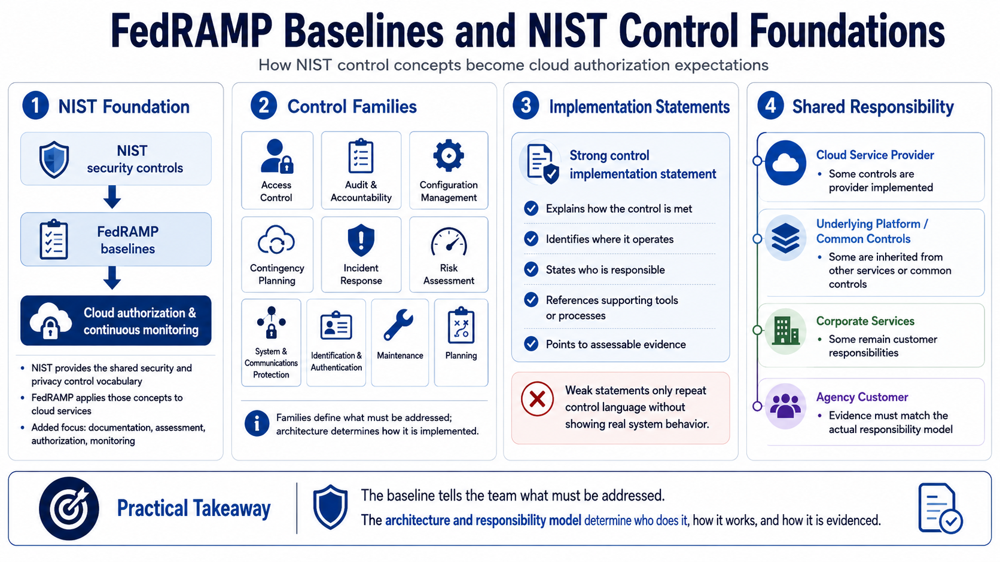

How Baselines Connect to NIST Controls
Connecting to LMS... Progress: in progress

Narration
FedRAMP baselines are grounded in NIST security control concepts, then applied to cloud service authorization. NIST controls provide a structured vocabulary for security and privacy expectations, while FedRAMP adds cloud-focused interpretation, documentation expectations, assessment practices, and ongoing monitoring context. This connection helps federal customers and providers discuss controls using a shared language instead of inventing a new framework for every service.
Control families cover broad areas such as access control, audit and accountability, configuration management, contingency planning, incident response, risk assessment, system and communications protection, identification and authentication, maintenance, planning, and related operational domains. The baseline identifies the kinds of control expectations that need attention, but the implementation depends on the actual cloud service, architecture, service model, and customer responsibilities.
Control implementation statements are where the provider explains how the service satisfies an expectation. A strong implementation statement is specific enough to be assessable. It describes what is done, where it is done, who is responsible, what tooling supports it, and what evidence can show it operating. Weak statements repeat the control language without showing how the real system works. Baseline literacy helps teams avoid that hollow style of documentation.
Cloud shared responsibility makes this more nuanced. Some controls may be implemented by the cloud service provider, some by an underlying platform, some by corporate services, and some by the agency customer. Some controls are inherited from other authorized services or common control providers. The baseline tells the team what must be addressed; the architecture and responsibility model determine who does what and how that responsibility is evidenced.